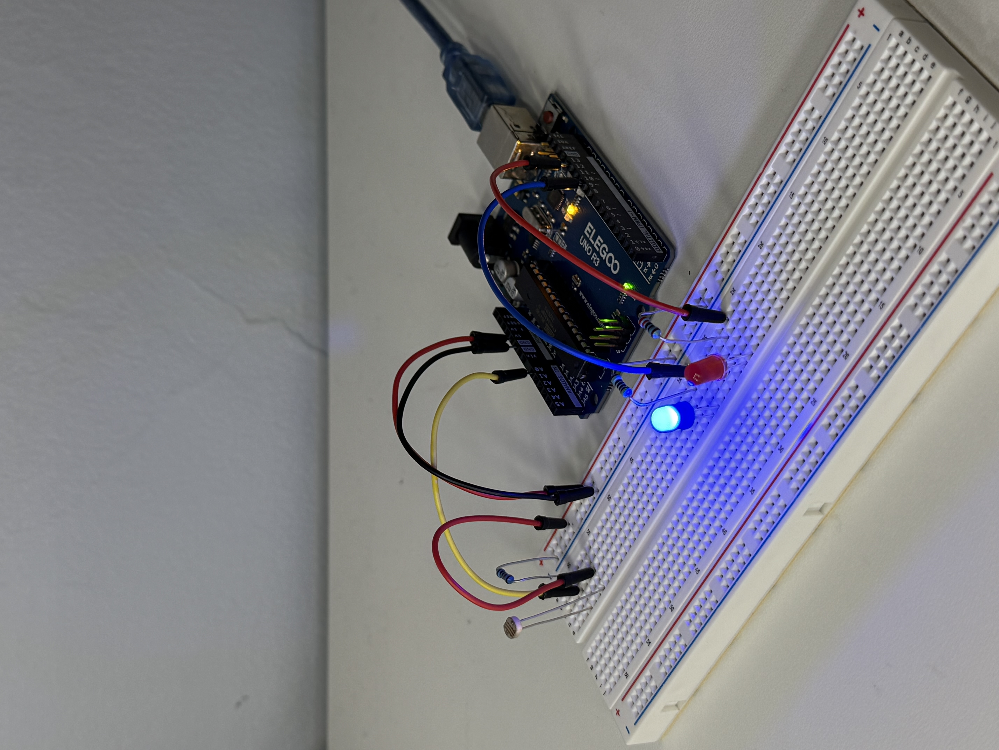

My Schematic
 Image of my schematic with labeled components, including pins, resistors, LEDs, photoresistor, and ground.
Image of my schematic with labeled components, including pins, resistors, LEDs, photoresistor, and ground.
Resistance Calculation
 Image of my calculations for the resistances needed for my circuit.
I used a 220 ohm resistor for the red LED, a 100 ohm resistor for the blue LED, and a 10k ohm resistor for the photoresistor.
Image of my calculations for the resistances needed for my circuit.
I used a 220 ohm resistor for the red LED, a 100 ohm resistor for the blue LED, and a 10k ohm resistor for the photoresistor.
My Circuit
 Image of my physical circuit, "Input Output", with all components connected.My Firmware
My Circuit's Operation
Video of my circuit in operation, with a photoresistor, red LED, and blue LED.Additional Questions
1: Say you are using a servo motor you attach to pin 9. In your loop() you have the following code:
void loop() {
for (pos = 0; pos <= 180; pos += 1) {
myservo.write(pos);
delay(100);
}
}
Answer.
2: Your input device is slightly broken, leading it to give us an erroneous reading 1% of the time. How can we address this? Answer in (pseudo)code.
Answer.
3: Your input device is slightly noisy, leading the measurement to randomly deviate from the true measurement up or down by 10%. How can we address this? Answer in (pseudo)code.
Answer.
4: Did you use AI tools in completing this assignment? If yes, please provide details on how/when, as well as a brief reflection. If no, you can either leave this question blank, or provide other information if you'd like.
Answer.